20 articles programmés, avec maillage, images et dates.
Automatiser les articles sans perdre le contrôle
Je construis un système qui part d'un audit SEO, génère un plan éditorial, crée des articles, ajoute les images, programme WordPress et me laisse corriger tout le lot si le ton n'est pas bon. Le but n'est pas de produire beaucoup pour produire beaucoup. Le but est d'obtenir un processus réutilisable, vérifiable et vendable.
Savoir cadrer un agent, pas juste lui demander un texte.
WordPress contient les articles et je peux les modifier en lot.
Je pars du blog RestIA déjà structuré
Je ne repars pas d'une page blanche. Le site RestIA a déjà une structure, un design, des pages business et une logique SEO. L'automatisation doit respecter ce contexte. Si je crée un blog automatique qui ne colle pas au site, je gagne du temps au mauvais endroit.
Je demande à Codex de générer des articles sans contexte.
Je lui donne les dossiers, l'audit SEO, la structure du blog et les contraintes WordPress.
La séance avance en huit actes
Mettre les bons dossiers et les bons fichiers au même endroit.
Ouvrir WordPress dans Chrome et connecter Codex.
Creer un premier article pour valider la structure.
Construire le maillage et les dates de publication.
Produire les articles et les prompts image.
Envoyer les articles dans WordPress.
Diagnostiquer le ton et les liens problematiques.
Transformer la méthode en prestation réutilisable.
Le vrai sujet, c'est le système
Un article isolé n'a pas beaucoup de valeur. Un système qui sait produire, publier, corriger et maintenir un lot complet a beaucoup plus de valeur. C'est pour ça que je pense en workflow : entree, contexte, génération, vérification, correction, publication.
A retenir
Chaque étape doit laisser une trace : fichier, capture, statut WordPress, JSON, date ou preuve visuelle.
Le piège du contenu automatique faible
Si je demande seulement 'fais-moi 100 articles', j'obtiens vite du contenu plat. Je veux des articles utiles pour un restaurateur, reliés à des problèmes réels : appels ratés, réservations, avis Google, no-show, privatisations, rush, tableaux de bord et rentabilité.
Volume sans intention, texte générique, images répétées, maillage absent.
Plan éditorial, intentions, mots-clés, images dédiées, maillage et correction globale.
Ce que je dois pouvoir vérifier
Je garde toujours une boucle courte
Je ne laisse pas l'agent partir trop loin sans preuve. Je lance une action, je contrôle, je corrige, puis j'élargis. C'est valable pour un article, pour les images, pour le planning et pour les corrections finales.
| Boucle | Question | Preuve |
|---|---|---|
| Contexte | Codex sait-il où il travaille ? | Le dossier et les fichiers sont visibles. |
| Production | Le contenu respecte-t-il la structure ? | Un article test s'affiche correctement. |
| Publication | WordPress a-t-il les bons statuts ? | Les articles sont en futur/programmé. |
| Correction | Le ton correspond-il à la cible ? | Le contenu ne sonne plus template. |
Je repère les dossiers utiles
Je commence par ranger le contexte. Le dossier blog doit contenir ce qui permet à Codex de comprendre la stratégie, l'audit SEO, les fichiers de structure et les livrables à produire. Cette étape paraît simple, mais elle évite beaucoup de confusion plus tard.
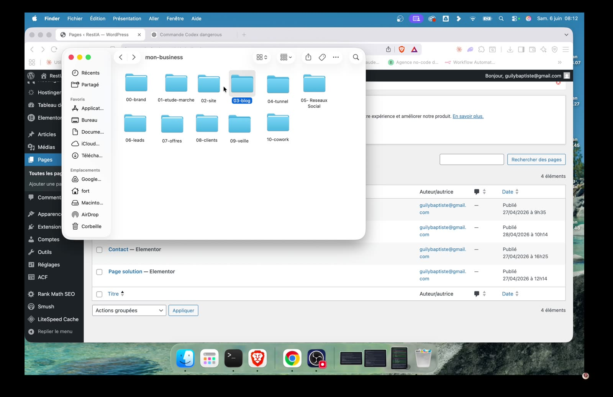
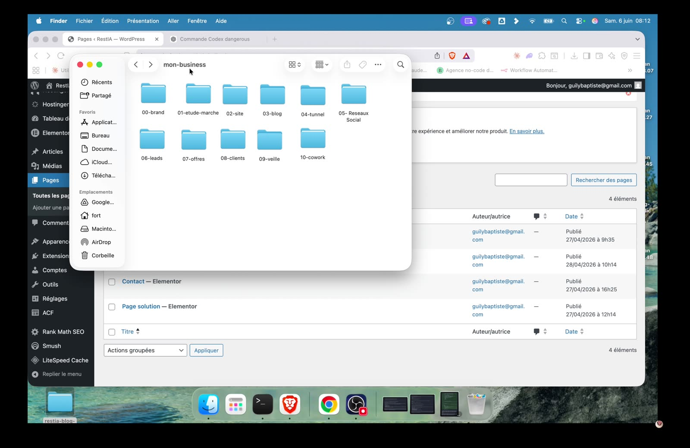
Je déplace la structure et l'audit SEO
Je glisse les éléments de structure du blog et l'audit SEO dans le même espace. Je veux que Codex puisse lire le contexte sans avoir à deviner ou chercher dans toute la formation.
Preuve
Je vois les dossiers et fichiers dans le Finder avant de lancer Codex.
Un bon dossier vaut mieux qu'un long prompt
Le prompt aide, mais les fichiers font foi. Quand l'audit, les captures, la structure et les consignes sont au bon endroit, Codex peut croiser les informations au lieu d'inventer un sujet au hasard.
Je lance Codex depuis le bon dossier
Je crée un nouveau terminal dans le dossier. Le détail important : je ne lance pas Codex depuis le bureau ou depuis un ancien projet. Je veux que toutes les lectures, sorties et corrections restent dans le dossier de la séance.
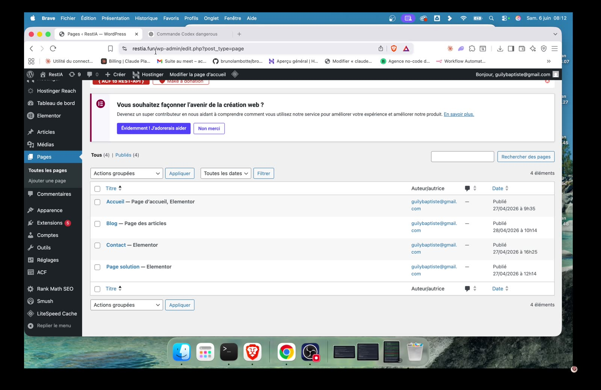
Le mode YOLO accélère, mais il ne pardonne pas le flou
Je peux utiliser un mode rapide parce que je suis dans un environnement de confiance. Mais ce choix impose une discipline : mission claire, dossier propre, pas de secret inutile, vérification régulière.
Attention
Si tu n'es pas sûr du dossier ou du contenu, reste sur un mode plus contrôle.
J'ouvre WordPress dans Chrome
Je demande à Codex d'ouvrir le site dans le navigateur. Le but est de travailler directement dans WordPress, avec l'admin réel, au lieu de rester dans une simulation.
Prompt à copier - ouvrir WordPress
Je l'utilise pour connecter Codex à la page WordPress cible.
ouvre un navigateur chrome sur cette page stp
https://restia.fun/wp-admin/edit.php?post_type=page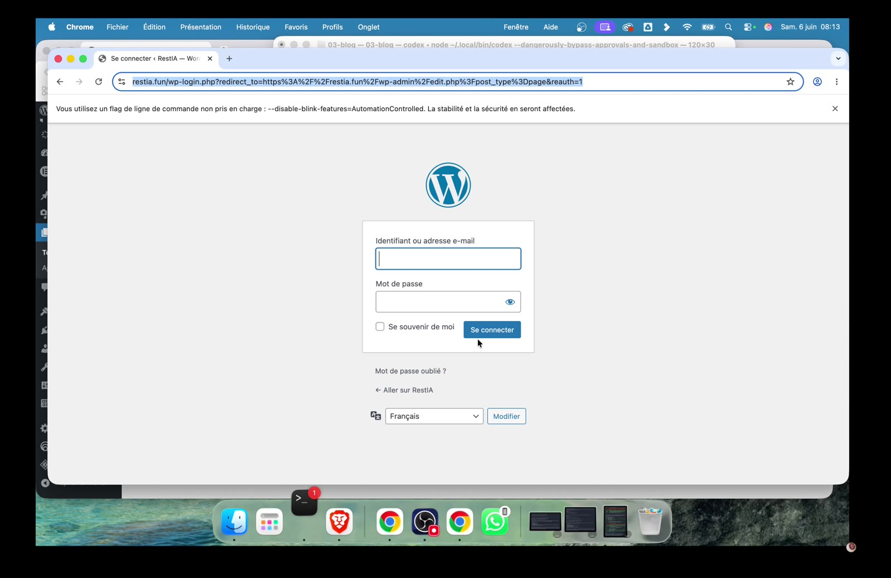
Je me connecte à WordPress
Je renseigne le compte, je teste le mot de passe et j'arrive dans l'admin. À partir de la, Codex peut naviguer, lire les pages, inspecter les articles et vérifier ce que WordPress affiche vraiment.
Je travaille dans l'interface réelle
L'intérêt du MCP/Chrome, c'est que je peux vérifier les effets concrets. Si Codex crée un article, je le vois dans WordPress. Si la date est mauvaise, je le vois. Si l'image manque, je le vois aussi.
Codex prépare les données.
Codex publié ou programme.
Je contrôle le rendu final.
Je demande l'analyse de la structure du blog
Avant d'écrire, Codex doit comprendre le blog : archive, template, champs, catégories, images, SEO, sommaire, articles liés. Sinon il peut produire un article propre mais inutilisable dans ma structure.
Prompt à copier - analyser la structure
Analyse la structure actuelle de mon blog RestIA.
Regarde les pages, les articles, les champs WordPress, les éléments SEO, les images et les fichiers présents dans le dossier.
Je veux que tu comprennes la structure avant de créer ou publier quoi que ce soit.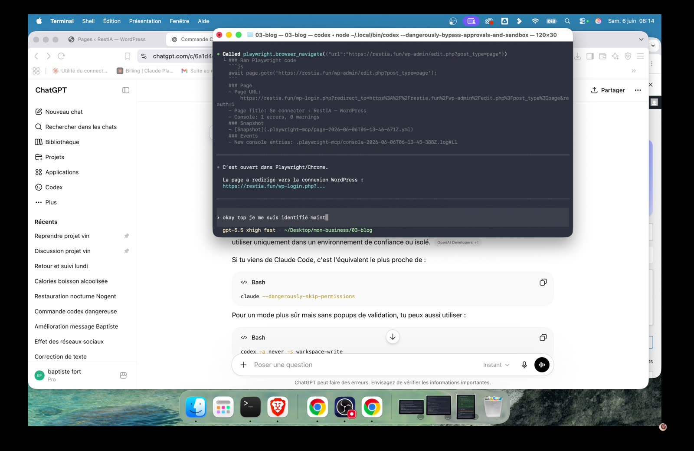
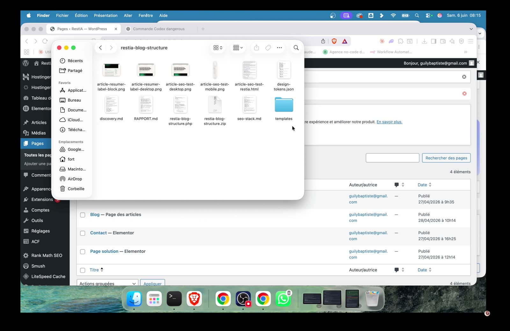
Je donne les fichiers RestIA et SEO
Je fournis les documents qui expliquent la structure. C'est une façon simple de transformer Codex en exécutant technique : il lit le contexte, puis il agit dans ce cadre.
Je vérifie que Codex a compris le périmètre
| Element | Pourquoi je le donne | Contrôle |
|---|---|---|
| Structure blog | Garder le même rendu que la séance precedente. | L'article s'affiche dans le bon template. |
| Audit SEO | Choisir des sujets utiles, pas aleatoires. | Le titre vise un besoin réel. |
| WordPress | Publier avec les bons champs. | Le statut et les dates sont corrects. |
| Images | Préparer le SEO média. | Alt, titre et légende sont remplis. |
Je valide un article avant de produire le lot
Je ne lance pas 200 articles tout de suite. Je fais d'abord un article test pour voir si le système comprend la structure. Une fois la preuve obtenue, je peux passer au plan éditorial et au lot.
Je génère tout d'un coup, puis je decouvre 200 erreurs.
Je teste un article, je corrige, puis j'élargis.
La checklist avant génération
Je veux des articles utiles pour Google et les moteurs IA
Je parle de SEO, mais aussi de GEO : l'article doit pouvoir être compris, cite, résumé et réutilisé par des moteurs IA. Ça demande une structure claire, des réponses directes, des exemples concrets et des sources quand elles sont utiles.
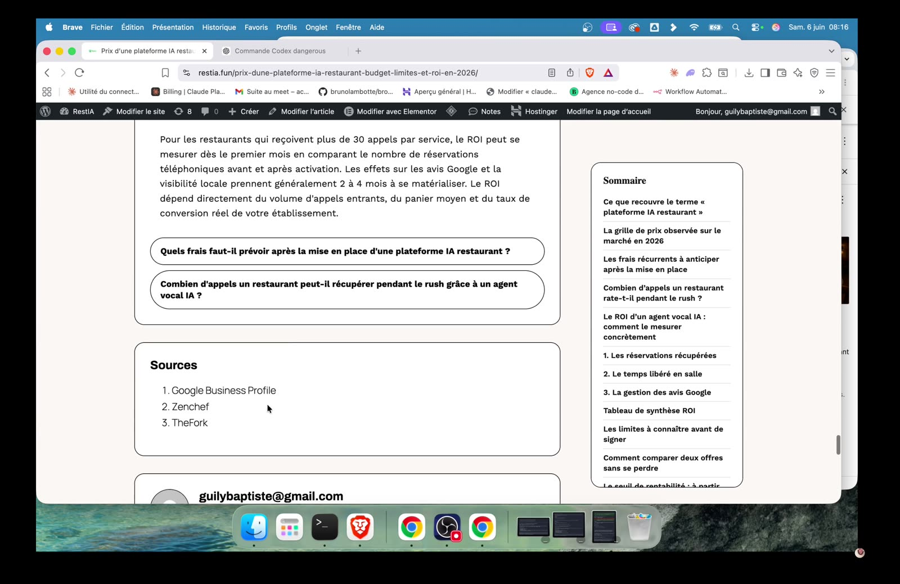
Je demande un premier article issu de l'audit
Ce prompt sert à empêcher Codex de choisir un sujet au hasard. Je veux qu'il lise l'audit, récupère un besoin prioritaire, puis prépare un article compatible avec la structure RestIA.
Prompt à copier - article test
Analyse le dossier d'audit SEO et récupère un sujet pertinent.
Ne choisis pas un sujet au hasard.
Prepare un article complet au format réutilisable dans la structure RestIA :
- contenu HTML ;
- champs SEO ;
- liens internes ;
- sources ;
- images ;
- titre, extrait, slug, catégorie.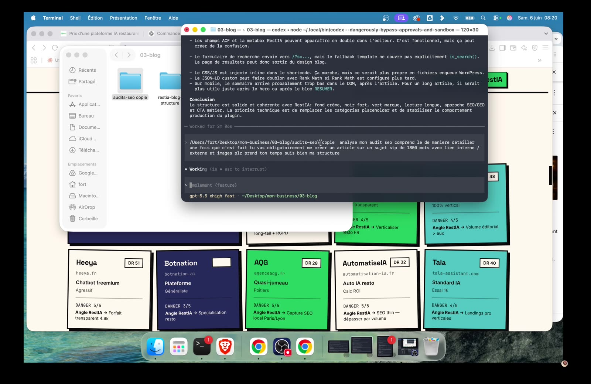
Codex analyse l'audit SEO
L'audit donne les mots-clés, les angles, les concurrents et les opportunités. Je veux que le premier article prouve que Codex sait passer de l'analyse à un contenu publiable.
Je refuse le sujet invente
Si Codex invente un sujet, je perds la valeur du travail SEO. Je le force à partir du dossier fourni. C'est une règle simple : le sujet doit venir des données, pas de l'inspiration du moment.
Signal de réussite
Le titre de l'article doit se relier à un mot-clé, une intention et une page business.
Le format attendu de l'article
| Bloc | Rôle | Vérification |
|---|---|---|
| Titre + slug | Cibler le mot-clé et rester lisible. | Le slug est court et compréhensible. |
| Introduction | Dire vite le problème et la promesse. | Un restaurateur comprend pourquoi lire. |
| Sommaire | Rendre la page scannable. | Les ancres pointent vers les bonnes sections. |
| Sections | Repondre concretement. | Chaque partie apporte une information utile. |
| Images | Illustrer l'étape ou le contexte. | Alt, titre et légende existent. |
| FAQ | Repondre aux questions longues. | Les réponses sont directes. |
Je contrôle les images des articles
Je veux des visuels différents pour chaque article. Une image répétée partout affaiblit le rendu et donne une impression de contenu automatique bas de gamme.
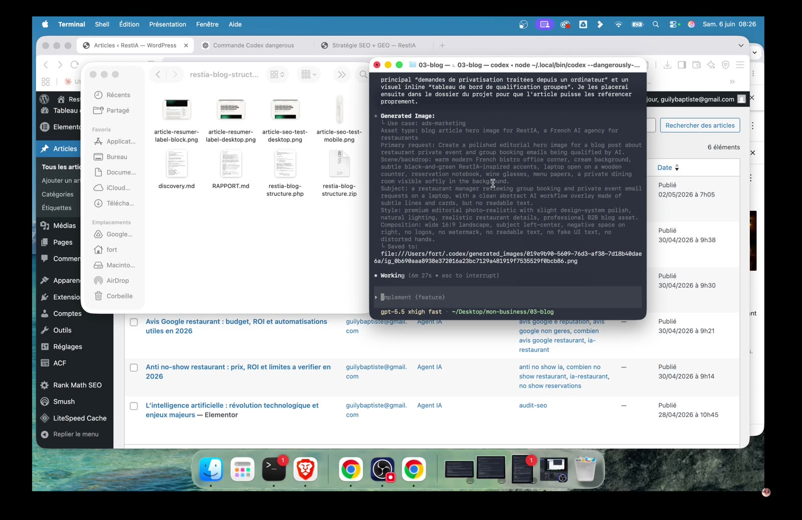
Je cadre les prompts image
Le prompt image doit inclure le contexte restaurant, le format, le style et les interdits : pas de texte illisible, pas de logo, pas de watermark. Je veux des images utiles pour expliquer le sujet.
Prompt à copier - prompts image
Pour chaque article, prépare 4 prompts image cohérents avec le sujet.
Les images doivent être différentes d'un article à l'autre.
Prepare aussi le texte alternatif, le titre, la légende et là description.
N'utilise pas une image générique répétée.Je prépare alt, titre, légende et description
Decrit l'image pour l'accessibilite et le SEO.
Aide a garder une bibliotheque WordPress lisible.
Explique le lien avec l'article quand c'est utile.
Ajoute le contexte sans bourrer de mots-clés.
Brouillon ou publication : je choisis la stratégie
Je peux publier directement, programmer, ou laisser en brouillon. Dans cette séance, je teste la planification parce que je veux un système autonome. Mais pour un client, je peux garder une validation manuelle si le risque éditorial est plus fort.
| Option | Quand je l'utilise | Risque |
|---|---|---|
| Brouillon | Le client doit relire chaque article. | Plus de manuel. |
| Programme | Le ton est valide et la cadence est claire. | Il faut bien vérifier avant. |
| Publie | Cas très contrôle ou contenu peu risque. | Erreur visible immediatement. |
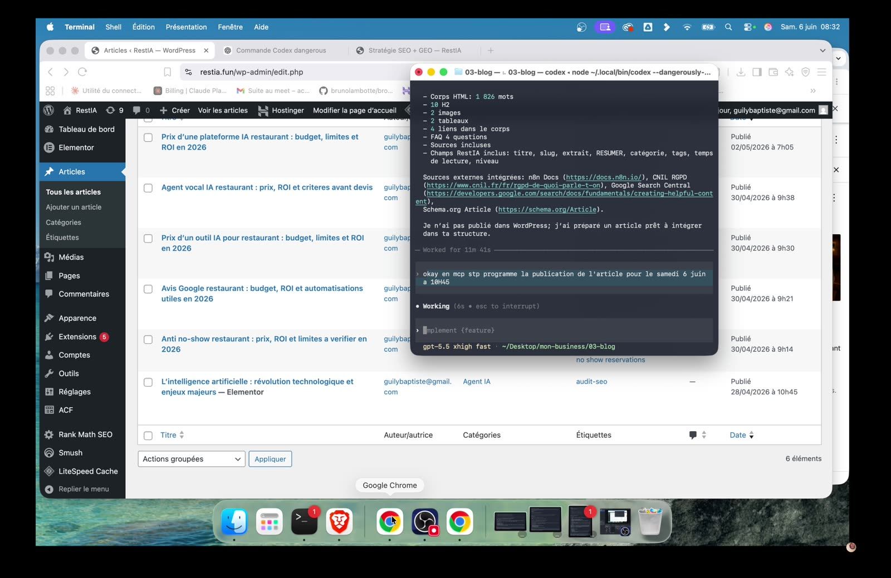
Je teste la programmation WordPress
Je veux vérifier que Codex sait envoyer un article avec une date future. C'est une preuve importante : le système ne s'arrête pas à la rédaction, il sait aller jusqu'à la publication planifiée.
J'ouvre l'audit SEO en parallèle
Pendant que Codex travaille, je peux ouvrir une autre fenêtre et vérifier les données. Les longues generations ne doivent pas me bloquer. Je garde une posture d'operateur : je surveille, je prépare, je contrôle.
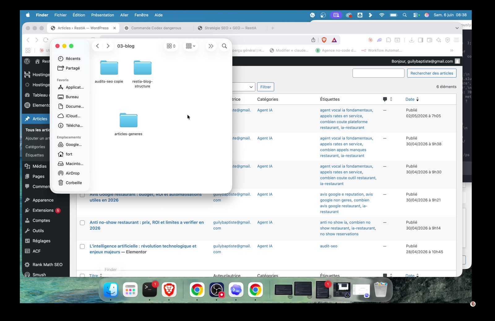
Je ne reste pas passif pendant les generations
Je regarde si l'agent suit encore le bon objectif.
Je gagne du temps sur la prochaine étape.
Je confirme que les livrables apparaissent.
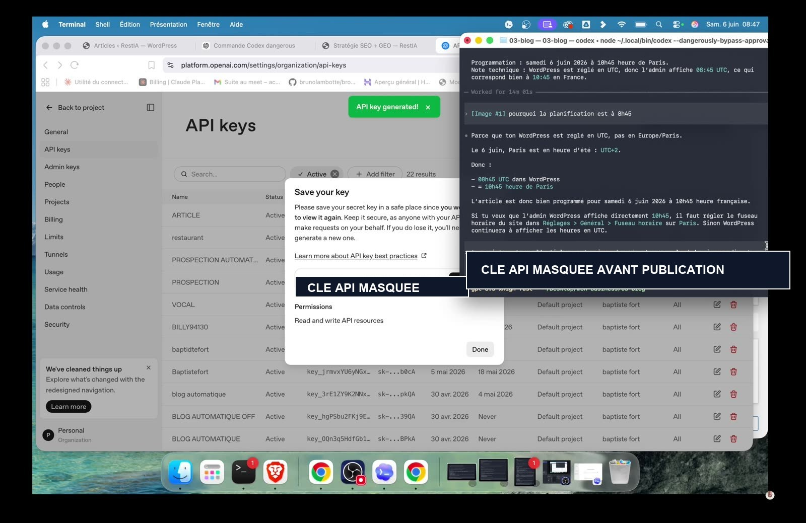
Je crée une clé API temporaire
La génération d'images passe par une API. Dans la séance, je crée une clé pour travailler en one-shot. Le point de sécurité : je ne garde pas une clé visible dans un repo, un prompt public ou une capture non masquée.
Je masque les secrets avant publication
Une clé API ne doit jamais finir dans GitHub Pages. Si elle a été collée dans une conversation ou une capture, je la masque. Si elle a été exposée, je la révoque ou je la remplace.
J'enrichis le plan éditorial
Le plan éditorial devient le centre du système. Il ne contient pas seulement des titres. Il contient les intentions, les liens, les dates, les prompts image et les briefs utiles pour produire les articles.
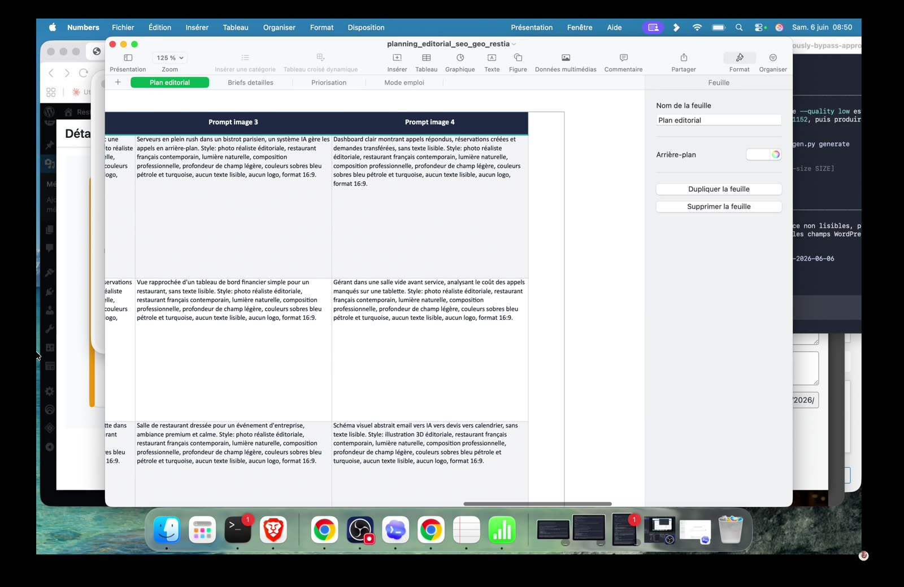
J'ajoute maillage et planning
Ce prompt transforme le plan en outil de production. Je demande explicitement le maillage entre les 20 articles et une cadence qui commence le 9 juin 2026 à 10h45, puis un article tous les 3 jours.
Prompt à copier - enrichir le plan
okay maintenant tu vas enrichir le plan éditorial pour le SEO.
Je veux faire du maillage interne entre les 20 articles.
Rajoute une colonne "Maillage interne recommande".
Exemple : article 1 maillage avec page d'accueil / page service / contact.
Ensuite article 2 maillage avec article 1, etc.
Il faut une vraie stratégie pour se lier entre les 20 articles.
Rajoute egalement une colonne "Planification publication".
Ca commence à partir du 9 juin à 10h45.
Je veux publier un article tous les 3 jours.Les colonnes qui changent tout
| Colonne | Pourquoi elle compte | Exemple |
|---|---|---|
| Maillage interne recommande | Evite les articles isoles. | Page service + article précédent + article complémentaire. |
| Planification publication | Automatise la cadence. | 09/06/2026 10:45. |
| Prompt image 1-4 | Prepare la génération média. | Scène restaurant liée au sujet. |
| Brief detaille | Garde le fond éditorial. | Problème, cible, preuves, angles. |
Je pense les liens comme une architecture
Le maillage ne consiste pas à mettre des liens partout. Je relie les articles aux pages business, aux articles proches et aux contenus qui expliquent une notion complémentaire.
| Type de lien | Destination | But |
|---|---|---|
| Business | Accueil, tarifs, service, contact | Convertir ou rassurer. |
| Article parent | Guide large | Renforcer un sujet pilier. |
| Article voisin | Problème proche | Continuer la lecture. |
| Article preuve | Cas client ou ROI | Donner du concret. |
Je fixe une vraie date de départ
La planification commence le 9 juin 2026 à 10h45. La date absolue évite les confusions de 'demain' ou 'dans trois jours', surtout quand WordPress affiche parfois une heure UTC.
Point horaire
Si WordPress est en UTC, 08h45 UTC peut correspondre à 10h45 à Paris en heure d'été.
Je publié tous les 3 jours
Une cadence régulière laisse le temps de vérifier, corriger et observer. Pour un premier lot, 20 articles tous les 3 jours donne environ deux mois de publications programmées.
| Article | Date indicative | Contrôle |
|---|---|---|
| A1 | 09/06/2026 10:45 | Premier article a vérifier en détail. |
| A2 | 12/06/2026 10:45 | Maillage vers A1. |
| A3 | 15/06/2026 10:45 | Maillage vers pages business. |
| A20 | 05/08/2026 10:45 | Dernier article du lot. |
Codex extrait le planning en JSON
Le JSON sert d'intermédiaire propre entre le tableur, les articles et WordPress. Quand les données sont structurées, Codex peut mapper chaque champ sans tout recalculer à chaque fois.
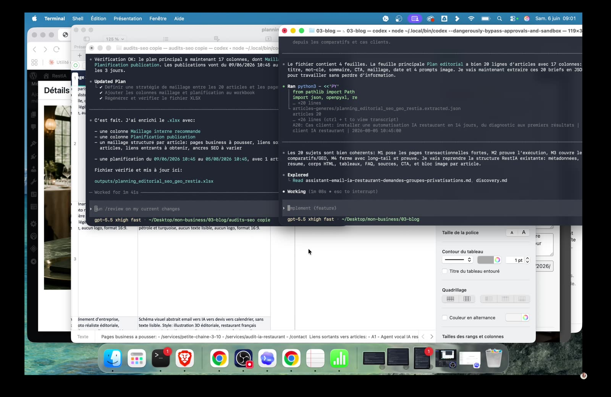
Je demande une extraction structurée
Je veux un fichier exploitable : 20 entrées, pas 19, pas 21. Chaque entree contient les champs qui serviront à la rédaction, aux images et à la publication.
Prompt à copier - JSON de production
À partir du plan éditorial enrichi, extrais les données utiles en JSON.
Chaque entree doit contenir :
- titre ;
- slug ;
- catégorie ;
- intention ;
- liens internes recommandes ;
- date de publication ;
- prompts image ;
- champs SEO ;
- brief de rédaction.
Verifie que les 20 articles sont présents avant de rédiger.Le JSON évite les pertes entre les étapes
La date et la cadence restent stables.
Chaque article garde son brief et son intention.
Les prompts média restent attaches au bon article.
Les champs se remplissent de maniere cohérente.
Je règle la longueur sans bloquer le système
Dans la séance, je vois que l'agent donne une fourchette large. Je peux ajuster pour éviter des articles trop uniformes. Le but n'est pas que tous les textes fassent exactement le même nombre de mots, mais qu'ils couvrent le sujet proprement.
Tous les articles font la même taille et sonnent génériques.
La longueur varie selon l'intention et le besoin du sujet.
La génération longue fait partie du process
Un lot de 20 articles avec images, maillage et champs SEO peut prendre du temps. C'est normal. Je ne confonds pas lenteur et échec. Je surveille les sorties et je laisse l'agent finir quand il avance correctement.
Bon réflexe
Si la sortie montre des fichiers qui se creent et des contrôles cohérents, je laisse tourner.
Je sépare parfois les images du texte
Les images peuvent consommer l'API et provoquer des limites. Je peux d'abord produire les prompts image, puis lancer la génération en batch plus tard. C'est plus fiable pour de gros volumes.
| Mode | Avantage | Limite |
|---|---|---|
| Tout en un | Simple pour un petit lot. | Risque de rate limit. |
| Prompts d'abord | Contrôle éditorial avant coût API. | Une étape en plus. |
| Images par lots | Plus stable. | Demande un suivi. |
Je lis les sorties au lieu d'attendre
Le plan devient un fichier de production
Le fichier enrichi n'est plus un simple planning. C'est le document qui pilote la suite : rédaction, images, maillage et publication. C'est aussi un livrable que je peux montrer à un client.
Livrable
Un bon plan éditorial automatise doit être lisible par un humain et exploitable par un agent.
Je contrôle la sortie avant l'upload
Avant WordPress, je vérifie que les 20 articles sont bien là, que les images sont prévues, que les champs SEO existent et que les sources ne manquent pas. Je préfère corriger avant l'upload plutôt qu'après.
20 articles présents.
HTML, résumé, FAQ, sources.
Liens internes et externes prevus.
4 blocs image par article.
Je passe à WordPress seulement après preuve
La décision de publier n'arrive pas au hasard. Je passe à WordPress quand les fichiers sont cohérents, que la structure est complète et que les contrôles de base sont bons.
| Question | Si oui | Si non |
|---|---|---|
| Les 20 articles existent ? | Je passe au mapping WordPress. | Je corrige la génération. |
| Les dates sont bonnes ? | Je programme. | Je recalcule le planning. |
| Les images sont pretes ? | Je les upload. | Je garde les articles en attente. |
| Le ton est valide ? | Je publié/programme. | Je corrige avant lot complet. |
Les articles sont créés en lot
Codex annonce les 20 articles, la longueur, les champs, le maillage, les sources et les prompts image. Cette sortie est importante : elle me dit ce qui existe vraiment avant l'integration WordPress.
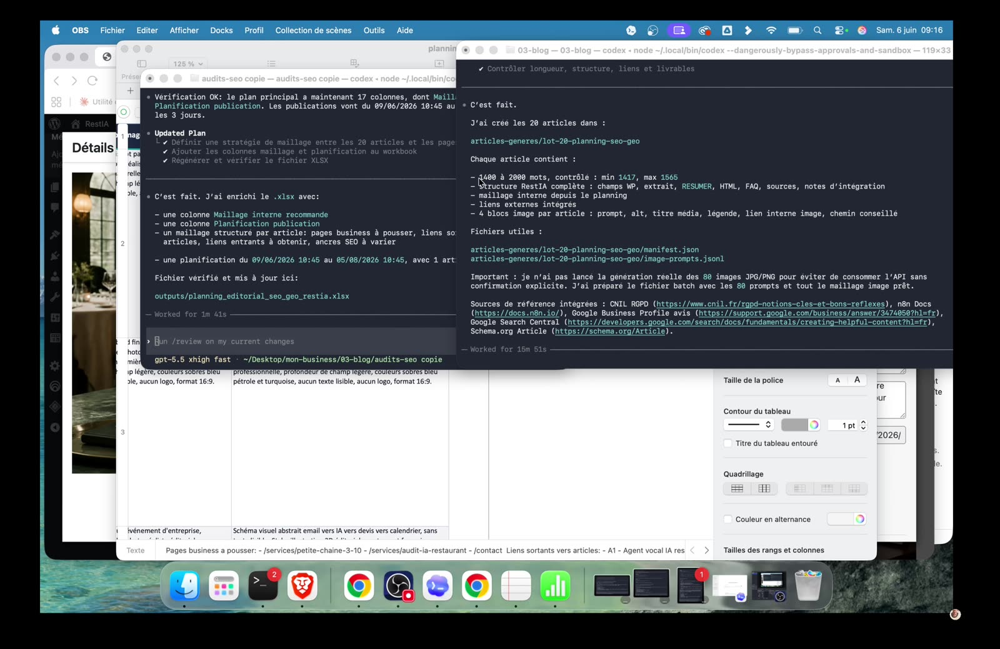
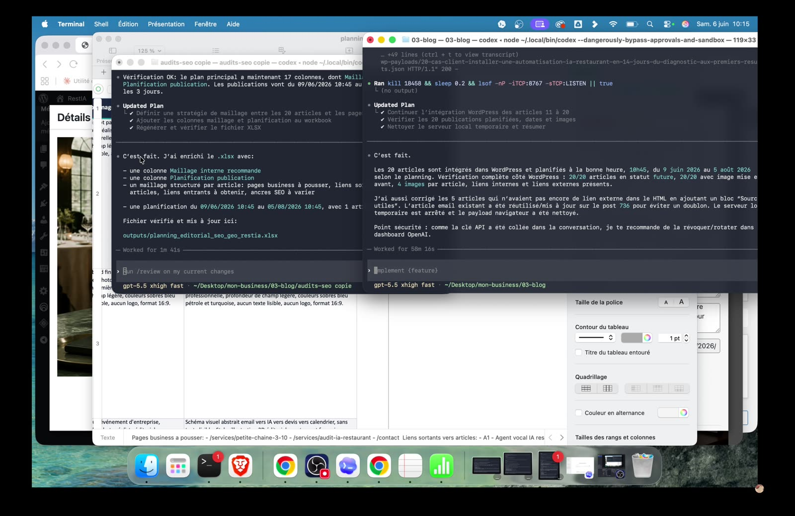
Je programme les articles dans WordPress
L'objectif est que WordPress contienne les articles en statut futur, avec la bonne date. Je ne veux pas une pile de fichiers locaux qui restent inutilisés.
Je donne la consigne de publication
Ce prompt sert à pousser les articles dans WordPress sans oublier les champs importants. Je garde la demande explicite : titre, slug, catégorie, extrait, contenu, images, SEO, liens et statut programmé.
Prompt à copier - publication WordPress
Publie les articles dans WordPress en respectant le planning.
Chaque article doit avoir :
- le bon titre ;
- le slug ;
- la catégorie ;
- l'extrait ;
- le contenu ;
- les images ;
- les champs SEO ;
- les liens internes ;
- le statut programmé à la bonne date.Les champs WordPress a controler
| Champ | Pourquoi | Erreur frequente |
|---|---|---|
| Titre | Cible le sujet et la requete. | Titre trop long ou trop SEO brut. |
| Slug | Rend l'URL lisible. | Slug coupe ou accentue bizarrement. |
| Categorie | Classe le blog. | Article sans catégorie. |
| Extrait | Sert aux cartes et au SEO. | Texte trop générique. |
| Image mise en avant | Structure le rendu. | Image manquante ou dupliquee. |
| Date | Active la cadence. | Fuseau horaire mal compris. |
Je note ce qui n'est pas encore fait
Codex peut rédiger les articles avant d'avoir génère les 80 images. Ce n'est pas grave si je le sais. Le problème serait de penser que tout est fini alors qu'une partie média reste à produire.
Contrôle
Je distingue toujours : article rédigé, image promptée, image générée, image uploadée.
Je vérifie la liste des articles
Dans WordPress, je regarde les statuts, les catégories, les mots-clés, les dates et les images. C'est la preuve que le lot est intégré, pas seulement prépare localement.
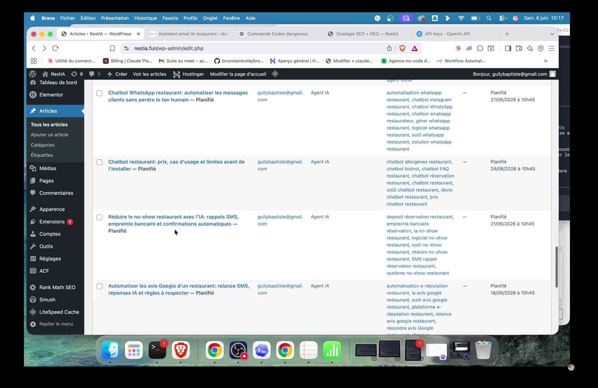
Je contrôle un article côté lecteur
Je clique dans un article et je regarde le rendu : hero, image, titre, texte, sommaire, sections, fin d'article. Je veux voir ce que l'élève ou le client verra vraiment.
La grille de vérification lecteur
Je n'envoie pas 200 articles sans test
Si je génère directement 200 articles dans WordPress, la correction devient plus lourde. Avec 20 articles, je vois le résultat, je corrige le prompt, puis je peux passer à 100, 200 ou 300 avec plus de confiance.
Je decouvre l'erreur après un gros lot.
Je corrige la logique sur un petit lot et je relance proprement.
Je clarifie le fuseau horaire
Dans la séance, la question de 08h45 / 10h45 apparaît. Je garde des dates absolues et je vérifie le fuseau WordPress. Le 9 juin 2026 à 10h45 à Paris peut s'afficher différemment si l'admin est en UTC.
Preuve
L'article doit être programme à l'heure voulue côté lecteur ou côté calendrier éditorial.
Je repère les phrases trop template
Le premier lot est techniquement bon, mais certaines phrases ne me plaisent pas. Elles sonnent comme des consignes internes ou comme du contenu trop commercial. C'est exactement le genre de problème qu'il faut détecter avant de produire plus.
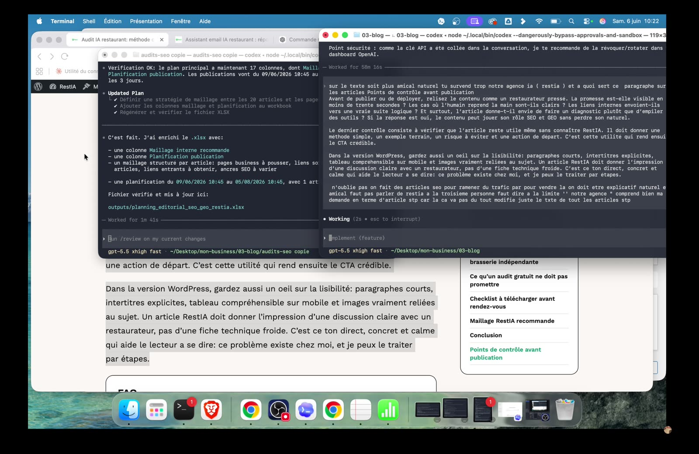
Le vrai problème n'est pas seulement une phrase
Je ne veux pas supprimer une ligne et garder le même ton partout. Je veux comprendre ce qui cloche : formulations artificielles, mentions RestIA trop visibles, blocs de contrôle internes, ancres mal générées, liens qui ne servent pas.
Elle est bonne, je la garde.
Il doit devenir plus naturel.
Ils doivent être utiles et fonctionnels.
Je ne les cassé pas pendant la correction.
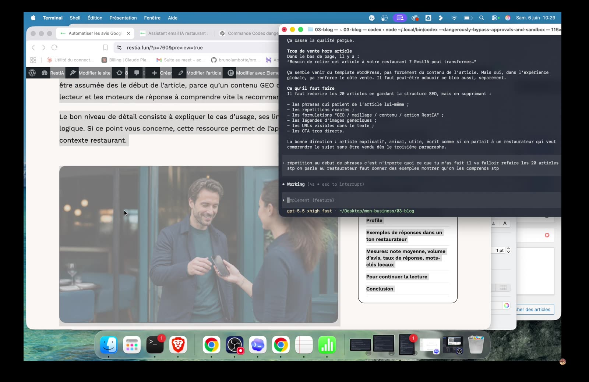
Je demande un diagnostic avant correction
La bonne demande : comprendre le vrai problème. Si Codex détecte les memes points que moi, je peux lui confier la correction globale avec plus de confiance.
Prompt à copier - diagnostic éditorial
Comprends le vrai problème des articles.
Ne corrige pas seulement une phrase.
Analyse ce qui sonne trop template, trop commercial ou trop artificiel.
Fais-moi un récap clair avant de modifier.Je compare le bon et le mauvais signal
| Signal | Mauvais | Bon |
|---|---|---|
| Ton | Phrase marketing vague. | Conseil concret pour restaurateur. |
| Mention marque | RestIA parle de RestIA. | L'article aide sans s'auto-promouvoir. |
| Bloc interne | Points de contrôle visibles. | Aucune note de production publiée. |
| Lien | Ancre mecanique ou cassee. | Lien utile dans le parcours de lecture. |
Je corrige le lot sans casser la structure
Je demande une correction globale des 20 articles déjà planifiés. Je précise ce qui doit rester : images, dates, slugs, catégories, champs SEO. La correction vise le texte et les blocs problematiques, pas tout le système.
Prompt à copier - correction globale
Corrige les 20 articles déjà planifiés.
Garde la structure, les images, les dates, les slugs, les catégories et les champs SEO.
Supprime les passages qui sonnent comme des consignes internes.
Reecris le contenu dans un ton plus naturel, concret et utile pour un restaurateur.
Ne mentionne pas RestIA à la troisieme personne dans le contenu.Je contrôle la version corrigée
La nouvelle version correspond davantage a ce que je veux : ton plus naturel, contenu moins template, structure conservee. Je ne cherche pas la perfection abstraite. Je cherche un résultat exploitable.
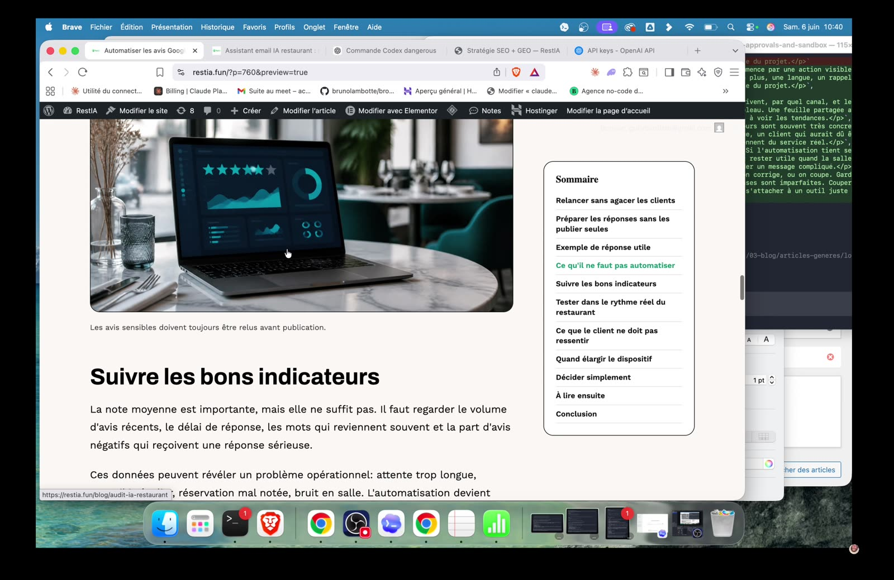
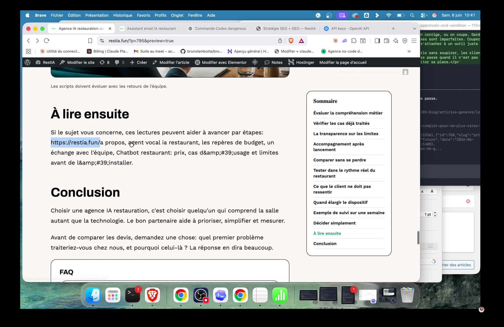
Je repère les liens qui ne fonctionnent pas
Après la correction, je contrôle encore. Des liens de redirection ou des blocs de fin peuvent poser problème. La structure est bonne, mais je veux nettoyer ce qui n'apporte rien au lecteur.
Je retire les liens problematiques
Je ne refais pas tous les articles. Je cible le problème transversal : liens cassés ou blocs inutiles. C'est l'avantage d'avoir les articles dans un système modifiable.
Prompt à copier - retirer les liens
Les liens de redirection ne fonctionnent pas.
Retire les liens ou blocs concernes de tous les articles.
Ne touche pas au reste de la structure.
Verifie ensuite qu'il ne reste plus de lien cassé visible dans les articles.Je conserve ce qui marche
Je ne change pas la planification déjà validee.
Je garde les médias et leurs champs.
Je ne cassé pas les URL prévues.
Je garde le classement WordPress.
Je conserve les champs importants.
Je garde le template et le sommaire.
WordPress rend la correction en lot pratique
Par rapport à un workflow ferme, WordPress me laisse reprendre les articles déjà créés. Je peux demander à Codex de modifier le lot, vérifier dans l'admin, puis controler une page publique.
Un workflow externe a génère des pages difficiles a reprendre.
WordPress contient les articles et Codex peut les corriger directement.
La méthode devient une prestation
Ce système peut être vendu : audit SEO/GEO, plan éditorial, génération, publication, correction, maintenance. Dans la séance, je donne l'exemple d'un projet blog automatique facturé autour de 4 500 a 4 800 euros, avec une maintenance mensuelle autour de 99 euros.
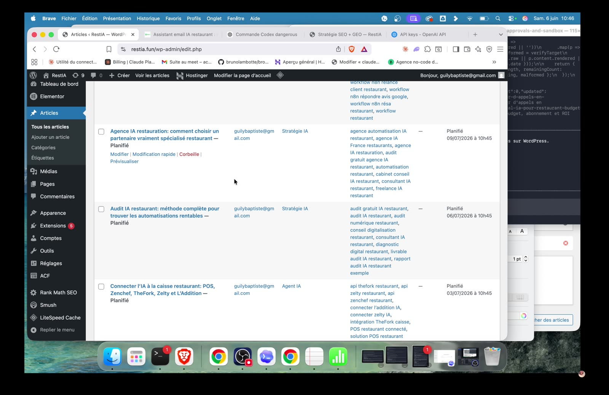
Ce que je peux vendre clairement
Structure WordPress, champs, prompts, templates.
Plan éditorial, articles, images, maillage.
Vérification SEO, ton, liens, statut.
Corrections, nouveaux lots, suivi des publications.
La valeur vient de la correction possible
Un système automatique qui ne se corrige pas est dangereux. Ici, la valeur vient du fait que je peux reprendre 20, 100 ou 300 articles avec une consigne claire. L'automatisation reste pilotable.
Phrase clé
Je ne vends pas seulement du contenu. Je vends une capacité de production et de correction.
Le workflow réutilisable
| Étape | Entrée | Sortie |
|---|---|---|
| Audit | Mots-cles, concurrents, intentions | Opportunites priorisées |
| Plan | Clusters et sujets | Planning + maillage |
| Génération | Briefs + prompts | Articles + images |
| Publication | JSON + WordPress | Articles programmés |
| QA | Rendu + admin | Corrections globales |
| Maintenance | Retours client | Nouveaux lots propres |
La checklist de reproduction
Tous les prompts de la séance
Tu peux repartir de ces prompts et les adapter a ton projet. Remplace RestIA par ton site, ton secteur, ton audit SEO et ta cadence de publication.
Ouvrir WordPress
ouvre un navigateur chrome sur cette page stp
https://restia.fun/wp-admin/edit.php?post_type=page
Analyser la structure
Analyse la structure actuelle de mon blog RestIA.
Regarde les pages, les articles, les champs WordPress, les éléments SEO, les images et les fichiers présents dans le dossier.
Je veux que tu comprennes la structure avant de créer ou publier quoi que ce soit.
Article test
Analyse le dossier d'audit SEO et récupère un sujet pertinent.
Ne choisis pas un sujet au hasard.
Prepare un article complet au format réutilisable dans la structure RestIA :
- contenu HTML ;
- champs SEO ;
- liens internes ;
- sources ;
- images ;
- titre, extrait, slug, catégorie.
Enrichir le plan
okay maintenant tu vas enrichir le plan éditorial pour le SEO.
Je veux faire du maillage interne entre les 20 articles.
Rajoute une colonne "Maillage interne recommande".
Exemple : article 1 maillage avec page d'accueil / page service / contact.
Ensuite article 2 maillage avec article 1, etc.
Il faut une vraie stratégie pour se lier entre les 20 articles.
Rajoute egalement une colonne "Planification publication".
Ca commence à partir du 9 juin à 10h45.
Je veux publier un article tous les 3 jours.
Publier dans WordPress
Publie les articles dans WordPress en respectant le planning.
Chaque article doit avoir :
- le bon titre ;
- le slug ;
- la catégorie ;
- l'extrait ;
- le contenu ;
- les images ;
- les champs SEO ;
- les liens internes ;
- le statut programmé à la bonne date.
Corriger le lot
Corrige les 20 articles déjà planifiés.
Garde la structure, les images, les dates, les slugs, les catégories et les champs SEO.
Supprime les passages qui sonnent comme des consignes internes.
Reecris le contenu dans un ton plus naturel, concret et utile pour un restaurateur.
Ne mentionne pas RestIA à la troisieme personne dans le contenu.Les fichiers de transcription sont disponibles
J'ai transcrit la vidéo, puis j'ai sépare la transcription brute, les moments importants et les segments JSON. La transcription brute garde les erreurs de reconnaissance quand Whisper a mal entendu, mais elle donne le fil complet de la séance.
transcription/transcription_brute.txt
transcription/moments_importants.md
transcription/segments.json
Les 23 captures utilisées
Toutes les images du support viennent de la vidéo fournie. Aucune image externe, aucune image stock, aucune image générée n'a été ajoutée.
Ce que tu dois refaire dans ton projet
La compétence n'est pas de mémoriser chaque clic. La compétence est de savoir cadrer un agent IA pour produire un système complet : contexte, plan, génération, publication, vérification, correction.
| Exercice | Consigne | Preuve |
|---|---|---|
| Dossier | Rassemble audit, structure et captures. | Le dossier contient les bons fichiers. |
| Prompt | Écris la mission sans flou. | Codex reformule le périmètre. |
| Article test | Génère un seul article. | Il s'affiche correctement. |
| Lot | Génère 10 à 20 articles. | Ils sont programmés. |
| Correction | Détecte un problème de ton. | Le lot est modifié sans casser les dates. |
Le récap final
Je pars d'un blog existant, je donne le contexte à Codex, je teste un article, j'enrichis le plan éditorial, je génère les articles, je programme WordPress, je contrôle le rendu, puis je corrige le lot. C'est cette boucle qui transforme une simple génération de texte en compétence d'expert IA.
Toujours commencer par le contexte et un article test.
Publier un gros lot sans vérification éditoriale.
Un système blog SEO/GEO automatisable et maintenable.